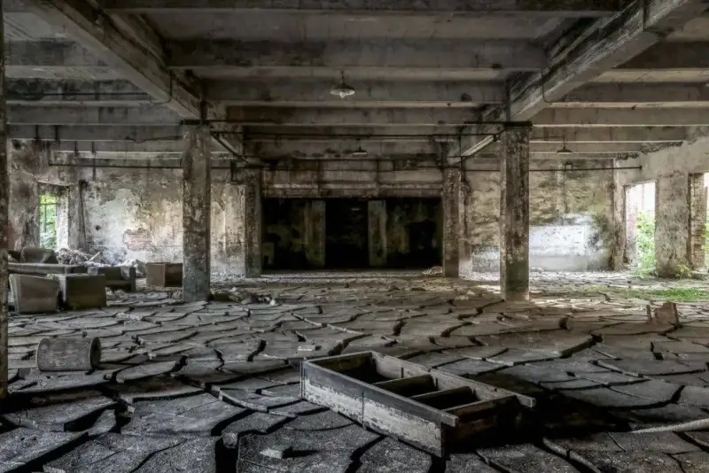
▲ Wuhan Chemical Plant (May 2017). Photo by Zhou Guoxian.
As early as 1973, the American scholar Daniel Bell put forward the concept of the post-industrial age. He sharply noted that the value of traditional industrial production in society was declining, and the knowledge economy was rising to dominate. He divided human history into three stages: pre-industrial society, industrial society, and post-industrial society. Zhou Guoxian's Typological Catalogue of Industrial Plants in Jingchu is perhaps a look back in the post-industrial age. It links up a meaningful thread in China's modernization.
In 2015, Li Yining pointed to the National Bureau of Statistics report for the third quarter of that year. Because the output of the tertiary sector had passed 51% of GDP, he took this as the sign that China had entered the post-industrial age. As for these three ages, different societies are built on different central axes. Pre-industrial society takes traditionalism as its axis. Its aim is to compete with nature, land is the resource, and landlords and soldiers hold power. In time, it runs up to before the steam engine. Industrial society takes economic growth as its axis. Its aim is to compete with processed nature, machines are the resource, and business owners are the rulers. In time, it runs up to before the wide use of electronic information technology in the 1970s and 1980s. Post-industrial society takes theoretical knowledge as its axis. Its aim is the competition of knowledge between people, and the scientific elite becomes the ruling group.
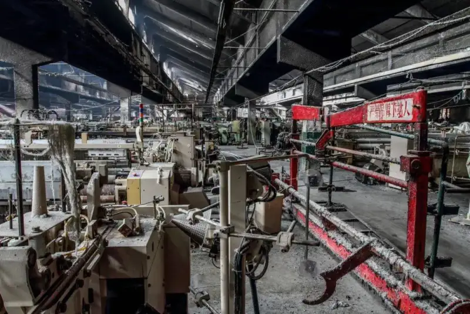
▲ State-owned Wuhan No. 1 Cotton Textile Mill (June 2011). Photo by Zhou Guoxian.
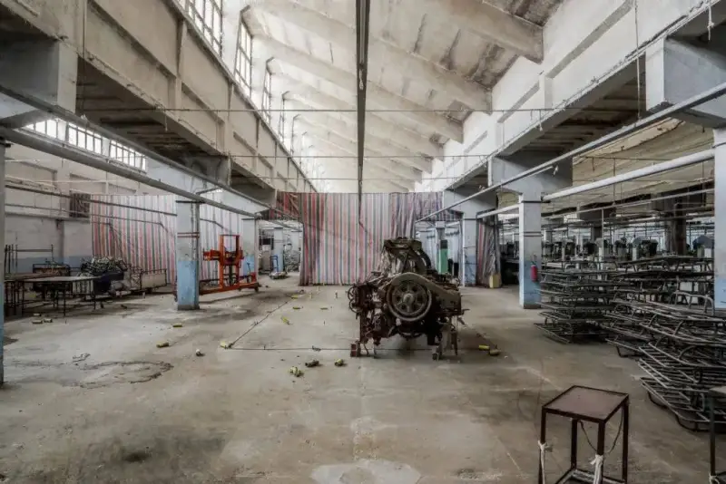
▲ Xiangfan City Cotton Weaving Mill (November 2018). Photo by Zhou Guoxian.
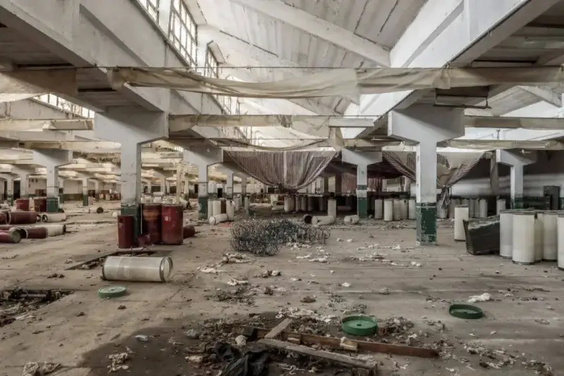
▲ Xiangfan May First Cotton Spinning Mill (October 2018). Photo by Zhou Guoxian.
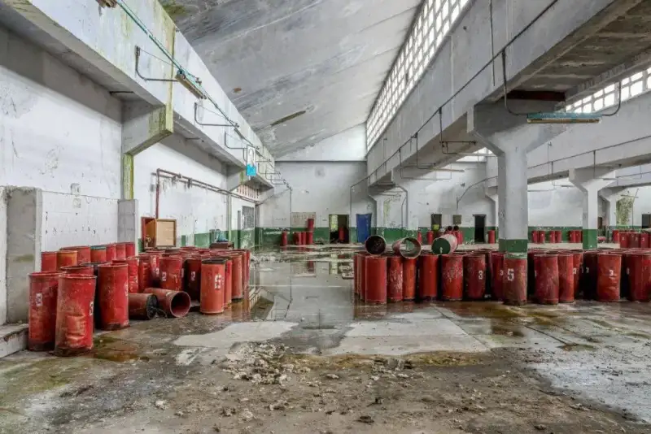
▲ Xishui County Cotton Weaving Mill (June 2019). Photo by Zhou Guoxian.
Given China's special path of development, Li Yining stressed three things to watch even after China entered the post-industrial age: develop the tertiary sector, finish what industrialization has not yet completed, and note the great future of agriculture. The portraits of industrial plants in Jingchu, which came at just the right time, open up much room for reflection from this special angle.
These neat, orderly portraits of plants immediately recall the work of the Bechers. Their industrial-archaeology portraits, which began in the 1960s, moved in step with Bell's post-industrial age. Or rather, they stood at the very moment when the Western world was about to enter the post-industrial age, and gave the industrial age a meaningful look. The couple's industrial-constructive photography lasted 40 years. It became a stand-alone, objective form of photography, and so entered the field of contemporary photography early. Their most important contribution was to create, under the key term industrial archaeology, a typology of a wholly different style for architectural photography.
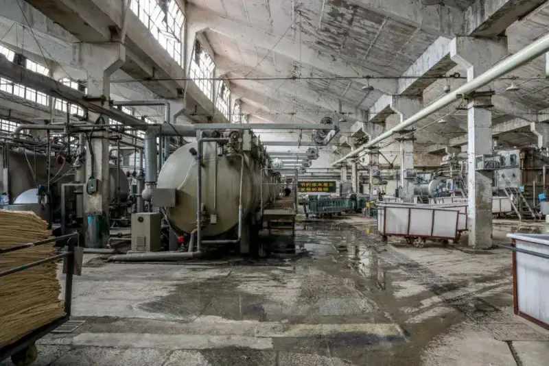
▲ Hubei Pufang Group Co., Ltd. (June 2019). Photo by Zhou Guoxian.
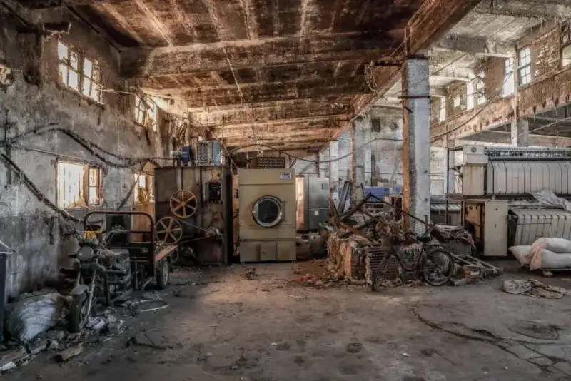
▲ Xiangfan City Towel Mill (October 2018). Photo by Zhou Guoxian.
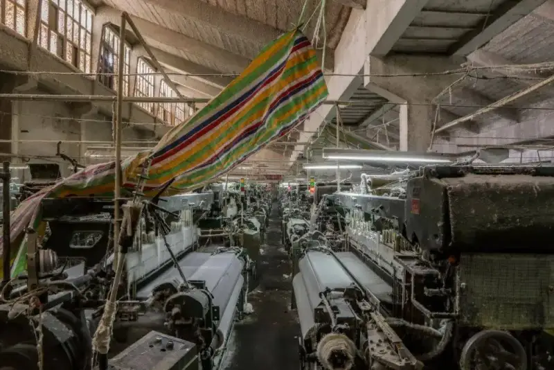
▲ Xiangfan City Bed Sheet Mill (October 2018). Photo by Zhou Guoxian.
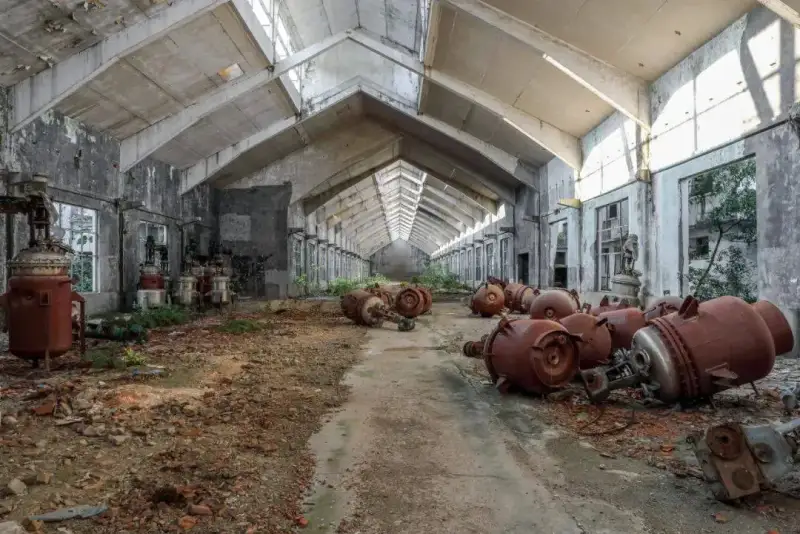
▲ Danjiangkou Factory 3545 (September 2019). Photo by Zhou Guoxian.
When the Bechers were later asked in an interview what drove them to focus so fully on documentary photography, they answered: the tradition of history-based documentary photography. Seen today, the thousands of works from those years have become a remarkable success. After a long passage of time, these works strike deeper and deeper. They hold a grave, powerful composition, a pressing conviction, and a distinctive taste. Above all, the whole series carries an astonishing inner logical force, moving straight from the modern into the contemporary.
This time, Zhou Guoxian spent three years, in a way similar to the Bechers, preserving the portraits of old industry in Wuhan and Hubei as precise historical documents. For the historical course of Chinese industry, they form a rare spiritual archive. His confident frontal, central-perspective composition, with a certain depth of field, shows photography's power to copy real detail, yet it differs from how the human eye sees things. This extreme simplification, through a unique method, creates impressive work, with as much objectivity and neutrality as possible. Perhaps the passage of time seems wholly erased from these images, yet the room for thought stretches far.
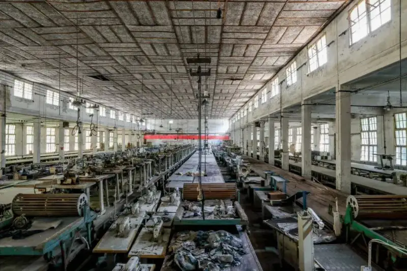
▲ Danjiangkou Factory 3541 (September 2019). Photo by Zhou Guoxian.
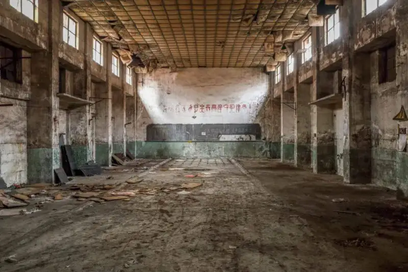
▲ Wuhan Webbing General Mill (March 2019). Photo by Zhou Guoxian.
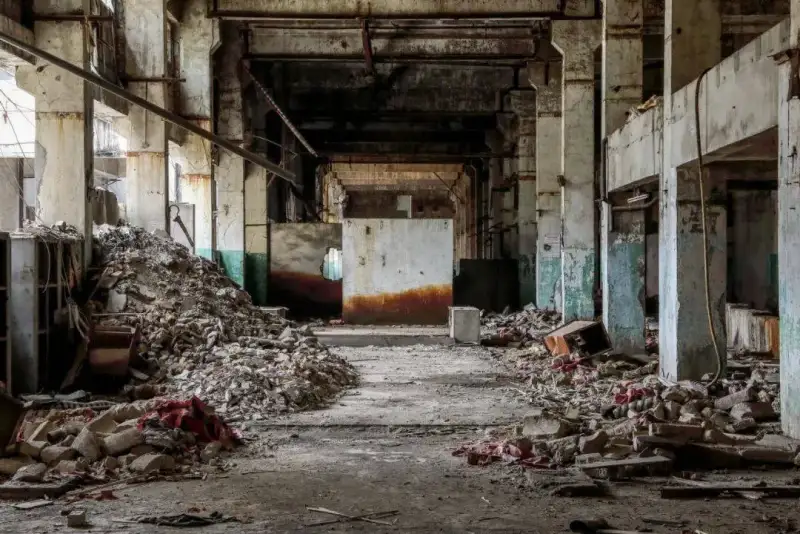
▲ Wuhan Bed Sheet General Mill (March 2018). Photo by Zhou Guoxian.
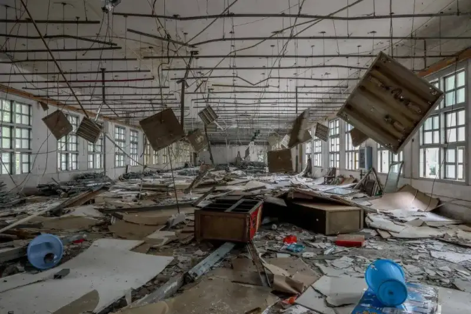
▲ Hubei Xinhua Printing House (June 2017). Photo by Zhou Guoxian.
Can we say this? Zhou Guoxian follows the complex link between historical and contemporary Chinese industry with great passion, and shows it in a distinctive aesthetic way. What he leaves behind is perhaps more than a historical archive. More importantly, it is the unique feeling and sensitive subject of an age. As he says, these slowly disappearing plants carry a sense of tragic sorrow.
This sense of tragic sorrow arises because precise visual force carries his study deep into the soul of those plants, and into social, psychological, and historical narrative. These images, with their cool judgment and strong tension, are enough to draw viewers into their own world and to imagine the boundless desolation of an age leaving the stage of history. These images are prepared for history, yet they also take aim at the present. The work appears in a regulated form, including aesthetic norms and inherited ideas. Set among industrial relics in a global sense, it naturally moves people to sigh. As the photographer Prinz says: 'A landscape is not what you see through a window. It has to do with where all of us belong.' In other words, Zhou Guoxian does not only give us special or true industrial panoramas so that we become viewers or readers. He makes us aware that we ourselves are also actors in the world he observes. Nothing can be cut apart. These industrial portraits keep reminding the viewer of the photographer's presence, and so break the distance between the camera and the world. For Zhou Guoxian, what he follows is no longer the problems of industry itself. It is the relation to the world of ideas that we perceive. Photography and human feeling are not two different things. Photography only extends the process by which we face the world.
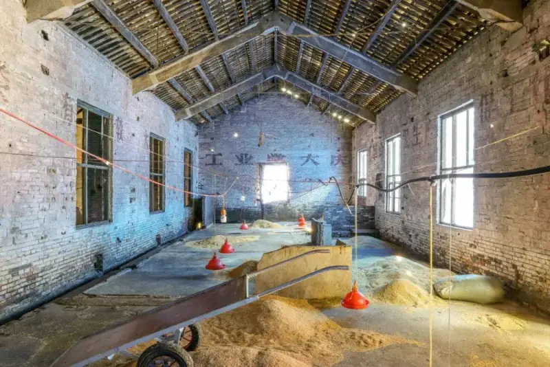
▲ Yidu Factory 288 (October 2019). Photo by Zhou Guoxian.
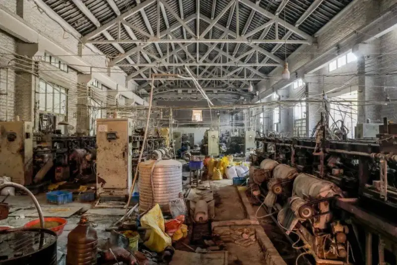
▲ North Industries Group Huaguang Equipment Plant (November 2018). Photo by Zhou Guoxian.
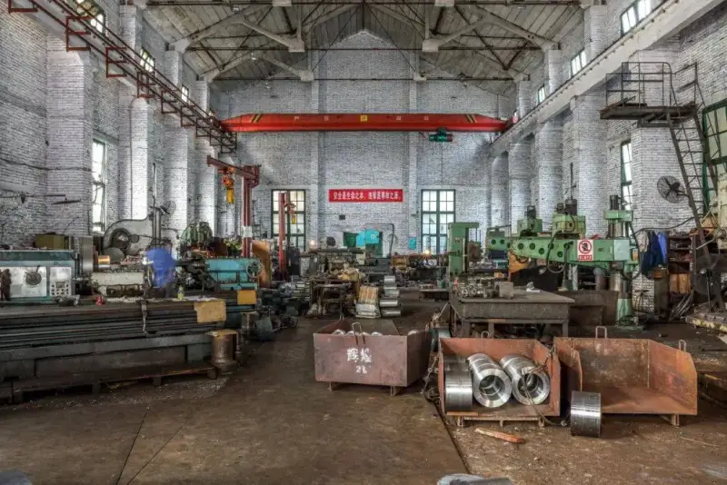
▲ Yidu Factory 388 (October 2019). Photo by Zhou Guoxian.
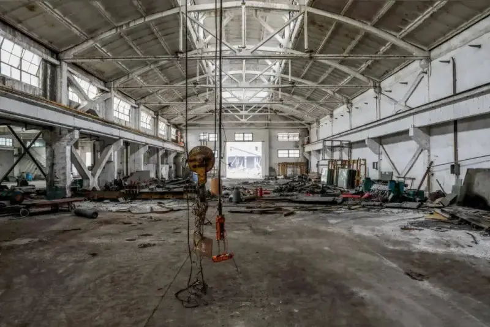
▲ Wuhan Glass Plant (March 2018). Photo by Zhou Guoxian.
So I go on to think that these soon-to-disappear industrial portraits carry not only a hard-to-let-go sorrow. They are really a memorial to the sublime. A beauty that cannot be expected lies hidden in the images. It overturns our usual idea of natural sublimity, and brings a new alertness to the modern landscape. This sublime aesthetic finds its definition in the 1756 work of Edmund Burke, the British statesman, philosopher, and writer. Burke separated the sublime from the beautiful. The sublime produces a great emotional force, even terror and awe. Burke believed the difference between the sublime and the beautiful is chiefly emotional, not intellectual. So the sublime can be understood this way: 'Whatever sort of excitement is aroused by pain or danger. That is, whatever sort of terror, or whatever terrifying object, including to some degree a terrifying activity, can be a source of the sublime. The strongest feeling it produces belongs to an emotional space of inner expression.'
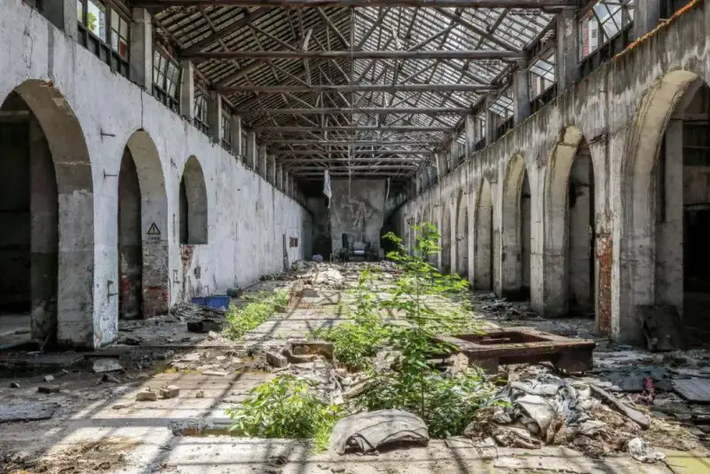
▲ Shashi Rubber Plant (May 2019). Photo by Zhou Guoxian.
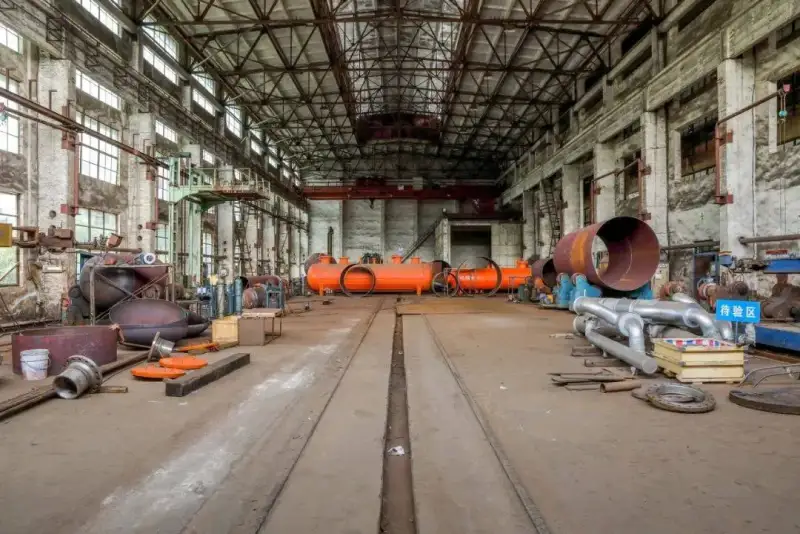
▲ Jingmen Refinery (October 2019). Photo by Zhou Guoxian.
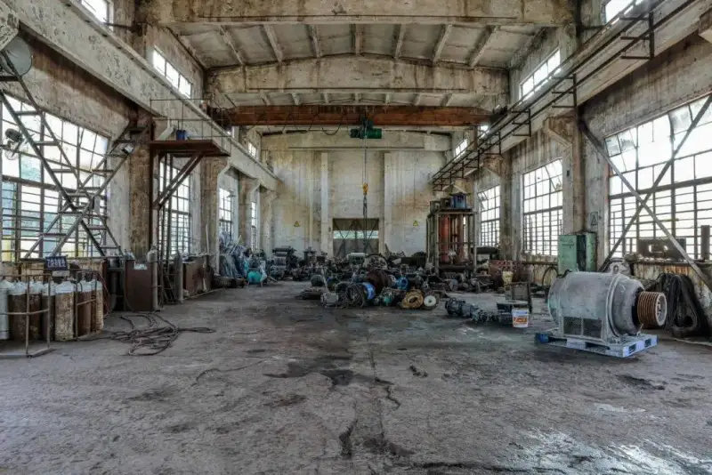
▲ Hubei Huangmailing Phosphate Chemical Co., Ltd. (June 2019). Photo by Zhou Guoxian.
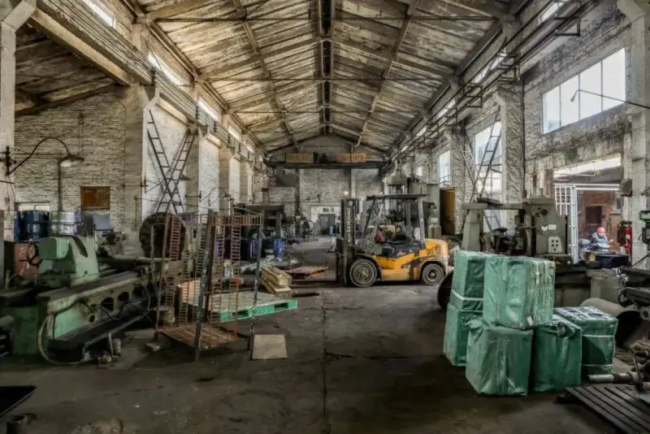
▲ Exi Chemical Plant (November 2018). Photo by Zhou Guoxian.
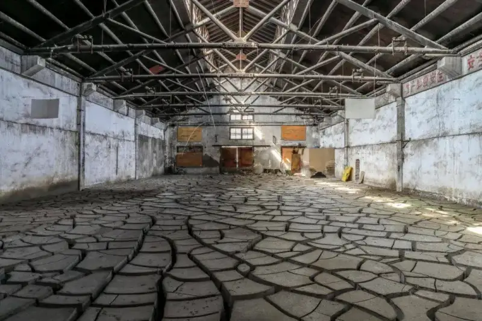
▲ Wuhan French-owned Kangcheng Brewery (May 2017). Photo by Zhou Guoxian.
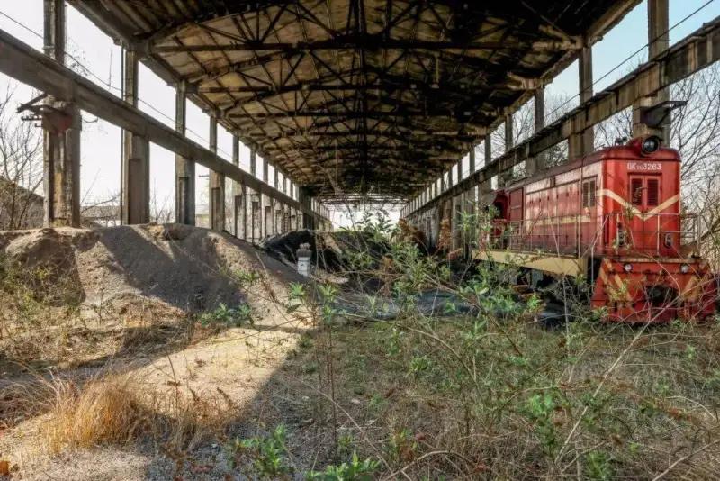
▲ Wuhan Gedian Chemical Plant (March 2018). Photo by Zhou Guoxian.
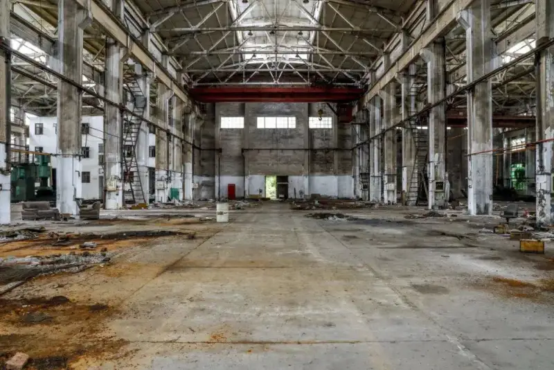
▲ China Yangtze River Shipping Group Hongguang Port Machinery Plant (October 2019). Photo by Zhou Guoxian.
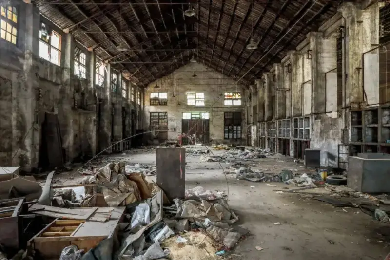
▲ Wuhan Instrument Group Refrigeration Automatic Control Instrument Plant (May 2018). Photo by Zhou Guoxian.
It is precisely in this sublime that feels sorrowful that Zhou Guoxian finds a source of inner purification. These large, dramatic, and thoughtful landscapes, with their outstanding analytical power and insight, explore the deepening theme of globalization from the standpoint of someone who looks back in the post-industrial age. They make us stop and think about the human predicament, and look for a way out.
So this look back carries extraordinary meaning!
(Written in Shanghai, November 2019)
Text by Lin Lu. Photos by Zhou Guoxian.